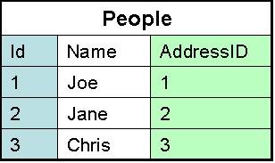
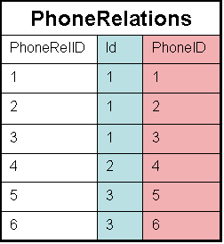
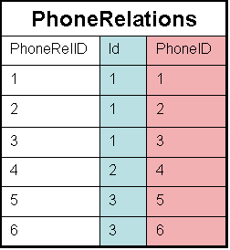

A logical design method which minimizes data redundancy and reduces design flaws.
Consists of applying various “normal” forms to the database design.
The normal forms break down large tables into smaller subsets.
First Normal Form (1NF)
- Each attribute must be atomic
- No repeating columns within a row.
- No multi-valued columns.
1NF simplifies attributes
Queries become easier.
Employee (unnormalized)
Employee (normalized)
Second Normal Form (2NF)
- Each attribute must be functionally dependent on the primary key.
- Functional dependence - the property of one or more attributes that uniquely determines the value of other attributes.
- Any non-dependent attributes are moved into a smaller (subset) table.
2NF improves data integrity.
Prevents update, insert, and delete anomalies.
Employee (1NF)
Employee (2NF)
Skills(2NF)
Third Normal Form (3NF)
- Remove transitive dependencies.
- Transitive dependence - two separate entities exist within one table.
- Any transitive dependencies are moved into a smaller (subset) table.
3NF further improves data integrity.
Prevents update, insert, and delete anomalies.
Employee (2NF)
Employee (3NF)
Department (3NF)
Other Normal Forms
- Boyce-Codd Normal Form (BCNF)----Strengthens 3NF by requiring the keys in the functional
dependencies to be superkeys (a column or columns that uniquely identify a row)
An entity type e is in BOYCE-CODD NORMAL FORM (BCNF) if and only if
-
e is in 3NF AND
- all determinants of e are candidate keys.
- Fourth Normal Form (4NF)----Eliminate trivial multivalued dependencies.
In a “many to many” relationship, independent entities cannot be stored in the same table.

 

- Fifth Normal Form (5NF)-----Eliminate dependencies not determined by keys.
The “very esoteric” one that is probably not required to get the most out of your database.
“The original table must be reconstructed from the tables into which it has been broken down.”
The rule ensures that you have not created any extraneous columns and all the tables are only as large as they need to be.